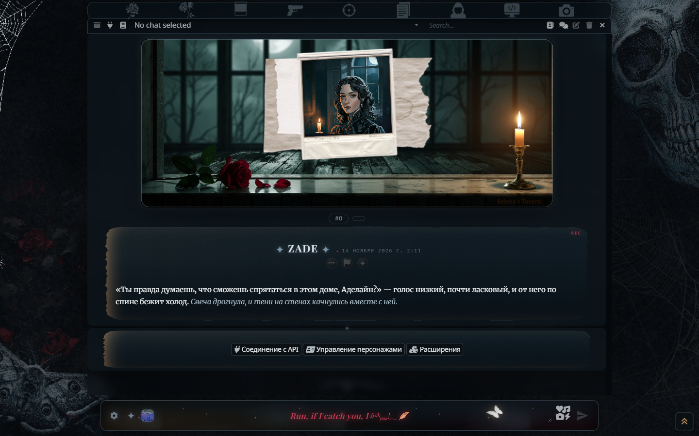
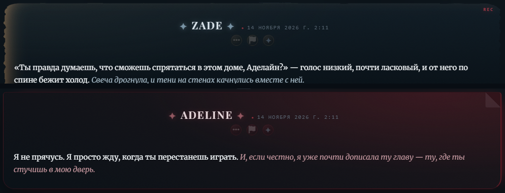
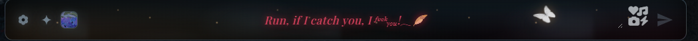

Готическая тема в духе тёмного романа: свеча на подоконнике, тёмно-красная роза, полароид на стене — и кто-то, кто смотрит из темноты. Пока персонаж печатает, вместо «отправить» бьётся сердце.

Тёмная ночь, свеча и роза. Всё остальное — детали, из которых складывается настроение.
Сцена у окна: свеча, роза и рамка полароида. Фото персонажа лежит под бумагой — поворачивается и обрезается вместе с рамкой.
У него — холодный стальной лист с рваным краем и меткой rec. У неё — тёмно-бордовая записка с загнутым уголком.
Самолётик превращается в пульсирующее сердце, пока идёт генерация, и возвращается, когда ответ готов.
Свечной свет слева, ползучий туман, тлеющие угли и бабочка у правого края.
Без логотипа SillyTavern: только бьющееся сердце и тихая надпись «Инициализация…».
Playfair Display и Merriweather. Свеча #D9A46A, роза #A3202F.
Один файл. Картинки тема берёт сама — с этой страницы. Ничего копировать не нужно.
Ctrl+Shift+R).

«Run, if I catch you…» made with love